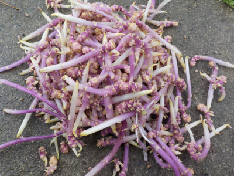
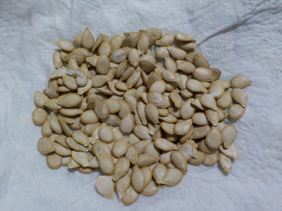

遊びで植物を育てよう
2021/12/19
昨日降った雪がまだ残っていました。
昨日降った雪です。
屋根から落ちたものが、日陰で溶けずに残っていました。
12月らしい。冬なので、冬らしいのが一番です。
【ページTOP】 【12月TOP】
【園芸TOP】
2021/12/19
ジャガイモの芽を取りました。

ジャガイモの芽が成長していたので採りました。
早く食べた方がいいですね。
スライスして焼くのが簡単でいいかな。
【ページTOP】 【12月TOP】
【園芸TOP】
2021/12/13
かぼちゃの種を採りました。

カボチャ1個分の種を採りました。
こんなに沢山必要じゃないですけど、沢山あると安心です。
来年種蒔きで使おうと思っています。
【ページTOP】 【12月TOP】
【園芸TOP】
過去の日記
【2019年12月の日記】
【2018年12月の日記】
【2017年12月の日記】
【2016年12月の日記】
【2015年12月の日記】
【2014年12月の日記】
【2013年12月の日記】
【ページTOP】
【12月TOP】
【園芸TOP】
畑仕事じゃないよ。
【おいしいものを食べよう。】【たくさん寝よう。】
【ソロ活をしよう!】【季節感のあることをしよう。】【動画視聴はほどほどに。】【当サイトの全てのコンテンツは無断転載禁止です。】